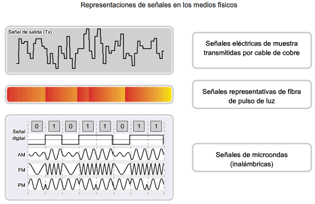

¿Qué es?
el nivel físico o capa física (Capa 1) se refiere a las transformaciones que se le hacen a la secuencia de bits para transmitirlos de un lugar a otro. Esta capa puede ser implementada por un PHY. Siempre los bits se manejan dentro del PC como niveles eléctricos. Por ejemplo, puede decirse que en un punto del cable existe un 1 cuando hay presente un determinado nivel de voltaje y un cero cuando su nivel es de 0 voltios. Cuando se transmiten los bits siempre se transforman en otro tipo de señales de tal manera que en el punto receptor puede recuperar la secuencia de bits originales.
La capa física define las especificaciones eléctricas, mecánicas, de procedimiento y funcionales para activar, mantener y desactivar el enlace físico entre sistemas finales. Si desea recordar la Capa 1 en la menor cantidad de palabras posible, piense en señales y medios.
Una de las funciones principales es codificar en señales los dígitos binarios que representan las tramas de la capa de Enlace de datos, además de transmitir y recibir estas señales a través de los medios físicos (alambres de cobre, fibra óptica o medio inalámbrico) que conectan los dispositivos de la red.
Representacion de señales en los medios fisicos
Sus principales funciones pueden concretarse a:
- Definir el medio o medios físicos por los que va a viajar la comunicación: cable de pares trenzados (o no, como en RS232/EIA232), cable coaxial, guías de onda, aire, fibra óptica.
- Definir las características materiales (componentes y conectores mecánicos) y eléctricas (niveles de tensión) que se van a usar en la transmisión de los datos por los medios físicos.
- Definir las características funcionales de la interfaz (establecimiento, mantenimiento y liberación del enlace físico).
Transmitir el flujo de bits a través del medio. - Transmitir el flujo de bits a través del medio. Manejar las señales eléctricas del medio de transmisión, polos en un enchufe, etc. Garantizar la conexión (aunque no la fiabilidad de dicha conexión). No esta relacionado con ningún tipo de protocolo de comunicaciones y tampoco con la fiabilidad de la información.
Entramado
La capa física le proporciona servicios a la capa de enlaces de datos con el objetivo que esta le proporcione servicios a la capa de red. La capa física recibe un flujo de bits e intenta enviarlo al destino, no siendo su responsabilidad entregarlos libre de errores. La capa de enlace de datos es la encargada de detectar y corregir los errores. Los errores pueden consistir en una mayor o menor cantidad de bits recibidos o diferencias en los valores que se emitieron y en los que se recibieron.
Un método común de detección de errores es que la capa de enlace de datos separe el flujo en tramas separadas y que realice la suma de verificación de cada trama. Cuando una trama llega a su destino se recalcula la suma de verificación. Si es distinta de la contenida en la trama es porque ha ocurrido un error y la capa de enlace debe solucionarlo.